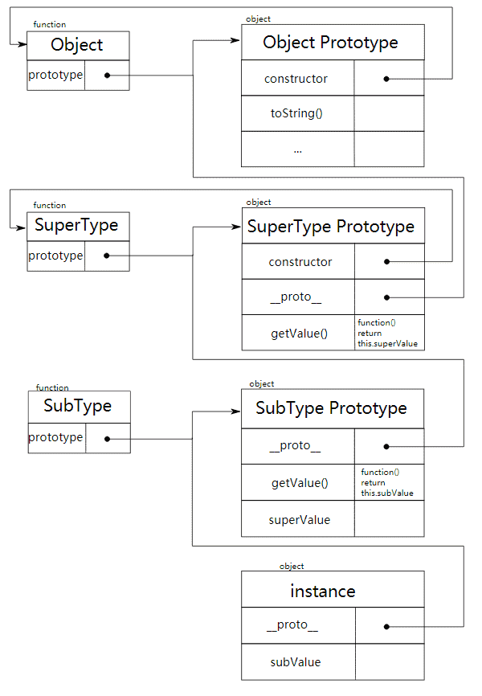
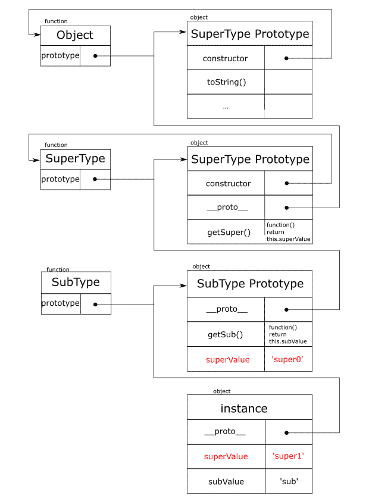
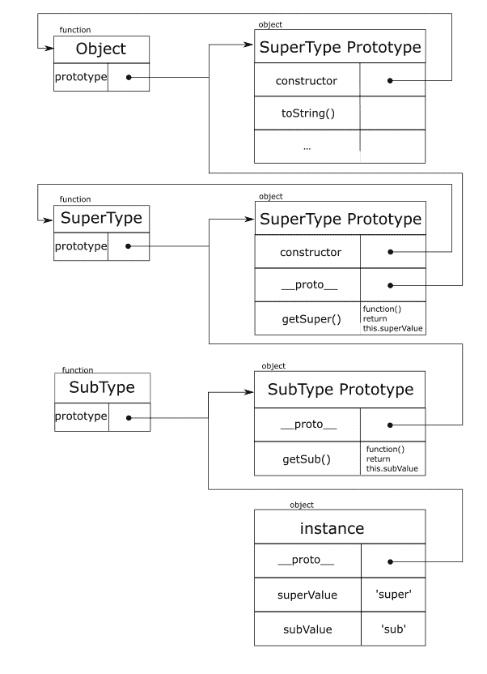
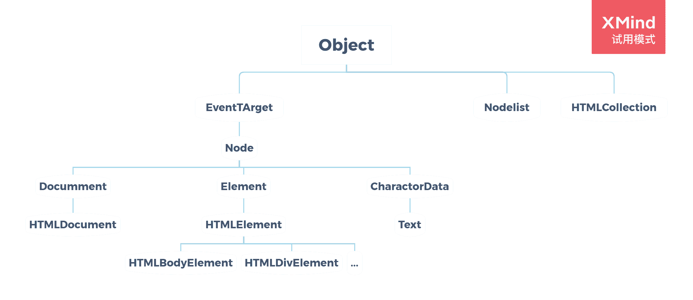

本文为《JavaScript高级程序设计》（第3版）前14章的笔记，没有全部摘录，不是关于JavaScript的教程，如果您对JavaScript不熟悉，强烈建议您阅读《JavaScript高级程序设计》（第3版），该书对ES5标准的JavaScript有既详实又易懂的介绍。在经过几次面试后，深感自己的JavaScript基础知识不是很好，所以又重新读了这本书的前14章，并把其中的有利于理解JavaScript的基础概念（如原型链、事件流），以及一些我觉得有价值的知识点整理了一下，在其上做了些补充。另外，如本文和ES6有冲突，以ES6为准。
基本概念
函数内var定义的数据，在函数外无法访问。
(function() {
var test = 1;
})()
console.log(test);//错误在全局作用域直接定义的变量是全局变量；省略var操作符，直接使用的变量是全局变量。
var test1 = 1;
(function() {
test2 = 2;
})()
console.log(window.test1 === test1);//true
console.log(window.test2 === test2);//trueECMAScript有5中基本数据类型，分别是
UndefinedNullBooleanStringNumber。typeof null === 'object'，typeof共有6种结果，分别是'undefined''boolean''string''number''object''function'。不需要显式指定
undefined值，仅用作比较；未声明和未初始化的变量都是undefined。一些默认的转换函数：
Boolean()Number()String()，推荐使用这些函数转换类型。parseInt(string, n)和number.toString(n)函数中的n(2,8,10,16)可以设置字符串指代数字的进制，比如下面第一行就是指11是一个16进制数字的字符串，第二行就是指转换后的字符串所代表数字为16进制。parseInt('11', 16);//17
11.toString(16);//'b'按位非
~，按位与&，按位或|，按位异或^，左移<<，有符号右移>>，无符号右移>>>。&&和||是短路操作符。存在字符串时，把数字运算括起来。
var message = '1 + 2 = ' + (1 + 2);//'1 + 2 = 3'。
在使用
><>=<===操作符比较时，除null和undefined外：若两个基本值类型不同，总是将两者转换为数字进行比较；若一个值为引用类型，则使用String()函数将其转换成字符串后再比较。true < 2;//true
'0' == false;//true
[11] == 0xb;//true
var a = {a:1};
a == '[object Object]';//trueundefined == null，且和其他值比较时不进行类型转换，所以均为false，虽然isNaN(Number(undefined)) === trueNumber(null) === 0。模赋值
%=，有符号左移赋值<<=，有符号右移赋值>>=，无符号右移赋值>>>=。for循环和for-of能用于可迭代的数据类型，如字符串（的基本包装类型）和数组；for-in能用于对象（包括数组）和字符串。label语句可以和break或continue语句联合使用。
var num = 0;
here:
for(var i = 0; i < 10; i++) {
for(var j = 0; j < 10; j++) {
if(i === 5 && j === 5) break here;
num++;
}
}
console.log(num);//55arguments和命名参数的值保持同步。
(function (a) {
arguments[0] = 1;
console.log(a);
})(0)//1ECMAScript没有函数重载，但可以根据参数做出不同的反应，模仿函数重载。
引用类型
检测引用类型时使用
instanceof，该操作符可确认某对象的所有构造函数（这里的构造函数指，只要其prototype指向该对象的原型链上某个对象，那就算该对象的广义上的构造函数）。Array实例的一些方法：
[1, 2, 3].join();//"1,2,3"
[1, 2, 3].join('|');//"1|2|3"
[1, 2, 3].reverse();//[3, 2, 1], 数组本身会变
[1, 3, 2].sort(function(a, b) {return a > b ? 1 : -1});//[1, 2, 3], 需要排列则返回1, 否则返回-1, 数组本身会变
[1, 2, 3].lastIndexOf(0);//3
[1, 2, 3].reduce(function(pre, cur) {return pre + cur;});//6
[{x : 1}, {x: 2}].reduce(function(pre, cur) {return pre + cur.x;}, 0);//3, 0为初始值
[[1, 2], [3, 4]].reduce(function(pre, cur) {return pre.concat(cur);});//[1, 2, 3, 4]使用Date创建日期对象时，若不想使用当前时间，而是使用指定时间，可使用以下命令：
var allFives = new Date(2015, 4, 5, 17, 55, 55);//2015年5月5日下午5点55分55秒
使用RegExp构造函数创建正则表达式时，需要对字符串双重转义，RegExp使用的是字符串的输出值（console.log()），并不清楚字符串内部细节，
所以字符串实际的输出值需要和字面量模式下保持一致。var reg00 = /\[error\]/;
var reg01 = new RegExp('\\[error\\]');//上面两个正则表达式相同，匹配"[error]"字符串
var reg10 = /\\n/g;
var reg11 = new RegExp('\\\\n', 'g');//上面两个正则表达式相同，并不是匹配换行符，而是全局匹配"\n"这样的字符RegExp实例的方法exec：在正则表达式不设全局标志时，该方法只会不断返回第一个匹配项；在正则表达式设置全局标志时，对于相同的字符串，该方法
会依次返回匹配的字符串，最后返回null；
RegExp实例的方法test：符合返回true，不符合返回false。var pattern = /.at/g;
var str1 = str2 = 'cat, rat';
pattern.exec(str1);//{0: 'cat', index: 0}
pattern.exec(str2);//{0: 'rat', index: 5}
pattern.exec(str1);//null
pattern.exec(str2);//{0: 'cat', index: 0}
pattern.test('cat');//true
pattern.test('dog');//falseFunction实例的方法apply，call，bind：扩充函数作用域。
var obj = {a: 'chosen a', b: 'chosen b'};
function show (choice) { console.log(this[choice]) }
show.apply(obj, ['a']);//chosen a
show.call(obj, 'b');//chosen b
function log (msg) { this.log(msg) }
log = log.bind(console);
log('hello bind');//hello bindNumber实例的一些方法:
var num = 10;
num.toFixed(2);//10.00
num.toExponential();//1e+1String实例和String构造函数的一些方法：
var str = 'hello world!';
str.charAt(1);//e
str.charCodeAt(1);//101
str.match(/.o/g);//['lo', 'wo']
str.search(/.o/g);//3
String.fromCharCode(104, 101, 108, 108, 111);//hello
面向对象的程序设计
对象有两种属性: 数据属性和访问器属性.
直接定义的属性都是数据属性, 数据属性有4个描述其行为的特性:
Configurable, 能否通过
delete删除属性, 能否修改Configurale和Enumerable, 能否修改Writable为true, 能否将属性变更为访问器属性Enumerable, 能否通过for-in访问到属性
Writable, 能否更改属性的值
Value, 属性的值
直接定义的属性前三个特性值都为true, Value为指定的值或undefined. 除了直接定义, 我们还可以通过Object.defineProperty来定义和修改对象的数据属性. 例子如下:var obj;
Object.defineProperty(obj, 'name', {
value: 'value',
enumerable: `true`
})前三个特性值不指定均默认为
false, 即该数据属性不可删除, 不可枚举, 也不可修改属性值, Configurale和Enumerable也不能修改, Writable不能由false修改为true.访问器属性不包括Value, 它包括以下4个描述其行为的特性:
- Configurable, 能否通过
delete删除属性, 能否修改属性的4个特性, 能否将属性变更为访问器属性 - Enumerable, 能否通过for-in访问到属性
- Set, 在写入时调用的函数
- Get, 在读取时调用的函数
访问器属性不能直接定义, 需要通过Object.defineProperty来定义和修改对象的访问器属性, 指定Get或Set即为设置访问器属性. 例子如下:var obj = {_a: 1};
Object.defineProperty(obj, 'name', {
configurable: true,
enumerable: true,
set: function (v) {
this._a = v;
},
get: function () {
return this._a;
}
})
可以通过
Object.defineProperties定义多个属性.Object.defineProperties(obj, {
'name1': {},
'name2': {}
})可以通过
Object.getOwnPropertyDescriptor(obj, 'name')来读取属性的特性.- Configurable, 能否通过
按照构造函数模式创建对象：
function Person () {
this.name = 'Sam';
}
var person = new Person();
//等同于
var person = {};
function Person () {
this.name = 'Sam';
}
Person.call(person);
//构造函数的实际过程按照原型模式创建对象：
function Person () {}
Person.prototype.name = ['Sam'];
var person0 = new Person();
var person1 = new Person();
person0.name === person1.name;//true按照构造函数模式创建对象的好处是可以标识，按照原型模式创建对象的好处是可以共享。
可以组合利用两种模式，利用构造函数模式定义特有属性，利用原型模式定义方法和共享属性。function Person (name) {
this.name = name;
}
Person.prototype.sayName = function () {console.log(this.name);}
Person.prototype.sayAge = function () {console.log(this.age);}
Person.prototype.age = 20;
var person0 = new Person('Sam');
var person1 = new Person('Amy');
with(person0) {sayName(); sayAge()};//Sam, 20
with(person1) {sayName(); sayAge()};//Amy, 20以下代码中，构造函数、原型和实例的关系如图：
function SuperType () {
this.superValue = 'super';
}
function SubType () {
this.subValue = 'sub';
}
SuperType.prototype.getValue = function () {
return this.superValue;
}
SubType.prototype = new SuperType();
SubType.prototype.getValue = function () {
return this.subValue;
}
var instance = new SubType();
with(instance) {
console.log(getValue(), superValue, subValue);
}//sub super sub
搜索对象属性和方法会按照实例-原型依次向上查找, 直到找到为止, 所以实例中的属性和方法可以屏蔽掉原型中的属性和方法, 如4中的getValue. 为了确定属性和方法的来源, 以及获取所有属性和方法, 可以按照以下表格的思路(Symbol类型是ES6中的新数据类型, 为了总结, 将它的遍历和检测方法一并放到这里):
遍历方法:
方法 自身可迭代属性 自身不可迭代属性 自身Symbol属性 继承可迭代属性 继承不可迭代属性 继承Symbol属性 Object.keys(obj)* Object.getOwnPropertyNames(obj)* * for(name in obj)* * Object.getOwnPropertySymbols(obj)* Reflect.ownKeys(obj)* * * 检测方法:
方法 自身可迭代属性 自身不可迭代属性 自身Symbol属性 继承可迭代属性 继承不可迭代属性 继承Symbol属性 obj.hasOwnProperty(name)* * * name in obj* * * * * * 使用原型链进行方法和共享属性的继承，使用构造函数进行一般属性的继承，这就是组合继承。组合继承如下：
function SuperType (v) {
this.superValue = v;
}
function SubType (sup, sub) {
this.subValue = sub;
SuperType.call(this, sup);//通过构造函数继承一般属性，第2次调用SuperValue
}
SuperType.prototype.getSuper = function () {
return this.superValue;
}
SubType.prototype = new SuperType('super0');//通过原型链继承方法和共享属性，第1次调用SuperValue
SubType.prototype.getSub = function () {
return this.subValue;
}
var instance = new SubType('super1', 'sub');
with(instance) {
console.log(getSub(), getSuper());
}//sub super1构造函数、原型和实例的关系如图：
可以看出，组合继承两次调用SuperValue，使得instance.superValue被定义了两次，发生了重复。我们的原则是一般的属性不应该进入原型链，共享属性和方法进入原型链，实现真正的共享属性和方法通过原型链继承，一般属性通过构造函数继承，寄生组合继承是最终的解决方案。
function inheritPrototype (prototype) {
function F () {}
F.prototype = prototype;
return new F();
}
function SuperType (v) {
this.superValue = v;
}
function SubType (sup, sub) {
this.subValue = sub;
SuperType.call(this, sup);//通过构造函数继承一般属性
}
SuperType.prototype.getSuper = function () {
return this.superValue;
}
SubType.prototype = inheritPrototype(SuperType.prototype);//通过原型链继承方法和共享属性
SubType.prototype.getSub = function () {
return this.subValue;
}
var instance = new SubType('super', 'sub');
with(instance) {
console.log(getSub(), getSuper());
}//sub super
函数表达式
函数声明有一个重要的特征，就是函数声明提升，意思是在代码执行之前读取函数声明。函数表达式没有这一点，它只是一个普通的Function类型的实例。
show();//hello
function() {
console.log('hello');
}//不要这样使用
if(true) function f () {}
else function f () {}//可以这样使用
if(true) f = function () {}
else f = function () {}为了防止函数名字发生改变而影响递归的使用，可以使用命名函数表达式，以下代码利用递归实现了阶乘：
var factorial = function f (n) {
return n <= 1 ? 1 : n * f(n - 1);
}
factorial(4);//24
f;//undefined，在外部不会访问到f这个变量关于this的指代, 两句话:
- 普通函数this指向函数的调用者, 如obj.fun()指向obj, fun()指向globalThis, fun.apply(obj)指向obj
- 箭头函数始终指向函数定义函数时所在的对象
匿名函数的话, 调用者是globalThis, 所以this指向globalThis. 下面是例子:let fun = function () {
console.log(this)
}
let obj = {
fun0: fun,
fun1() {
fun()
},
fun2() {
(() => {
console.log(this)
})()
}
};
obj.fun0();//obj
obj.fun1();//Window
obj.fun2();//obj
JavaScript没有块级作用域概念，可以使用函数来模拟：
(function () {
})();
BOM
在浏览器中，
window具有双重角色，它既是JavaScript访问窗口的一个接口，又是Global对象。跨frame的instanceof操作符不管用，因为
top.Object != top.frames[0].Object。window.screenLeft和window.screenTop分别表示浏览器窗口相对于屏幕左边缘和上边缘的位置。这两个值受操作系统缩放比例的影响。window.outerWidth和window.outerHeight分别表示浏览器窗口的宽度和高度，这两个值受操作系统缩放比例的影响。window.innerWidth和window.innerHeight分别表示包含滚动条的内部窗口宽度和高度，这两个值受操作系统缩放比例和浏览器缩放比例的影响。
html元素的clientWidth和clientHeight分别表示不包含滚动条的内部窗口宽度和高度，这两个值受操作系统缩放比例和浏览器缩放比例的影响。window.devicePixelRatio表示物理像素分辨率和CSS像素分辨率之比，即显示效果的放大倍数。//Windows操作系统的缩放比例是1.24，浏览器的缩放比例是1.25
//在浏览器最大化时
//显示器分辨率为1920*1080
window.screenLeft;//0
1920 / window.outerWidth;//约1.24
window.outerWidth / window.innerWidth;//约1.25
window.innerWidth - document.documentElement.clientWidth;//13，指上下滚动条的CSS像素宽度为13
window.devicePixelRatio;//约1.55，即1.24*1.25打开新标签页：
window.open(url)，本页面加载其他网址：window.open(url, '_self')，弹出窗口：window.open(url, true)。使用
prompt(question, defaultAnswer)方法可以弹出文本对话框。location对象既属于window，又属于document，也就是说window.location === document.location。可以通过修改
location对象的属性来改变当前页面地址，location对象的属性如下：属性名 例子 hash '#contents'host 'www.baidu.com:443'hostname 'www.baidu.com'href 'https://www.baidu.com:443/content'pathname '/content'port 443protocol 'https:'search '?query=abc'重新加载页面：
locaiton.reload();//重新加载（有可能从缓存加载）
location.reload(true);//从服务器重新加载如果想让用户不能返回之前的网页，可以使用
location.replace(url)方法。出于安全考虑，开发者无法获得用户浏览过的url，但是可以在不知道url的情况下使用
window.histiry对象实现前进和后退：history.go(-1);//后退一页
history.go(2);//前进两页
history.go('baidu.com');//跳转到最近的‘baidu.com’页面
history.length === 0;//这是当前用户打开窗口后的第一个页面
DOM
通过一个节点的
nodeType属性, 可以获得节点的类型, 详情如下:常量 值 描述 Node.ELEMENT_NODE 1 元素节点 Node.TEXT_NODE 3 文本节点 Node.COMMENT_NODE 8 注释节点 Node.DOCUMENT_NODE 9 Document节点, 一般是html节点和DOCTYPE节点的父节点 Node.DOCUMENT_TYPE_NODE 10 DOCTYPE节点 Node.DOCUMENT_FRAGMENT_NODE 11 文档片段节点, 虚拟DOM, 不在真实DOM中 NodeList是一组有序的节点，有length属性，可以通过[]访问其值，但是它不是Array的实例。
var nodes = Array.prototype.slice.call(aNodeList, 0);//将NodeList转换成数组
Node类型的一些方法：
parent.appendChild(newChild);
parent.insertBefore(newChild, anotherChild);
parent.replaceChild(newChild, anotherChild);
parent.removeChild(child);使用
document.documentElement或document.lastChild访问<html>对象，使用document.body访问<body>对象，使用document.head访问<head>对象。使用
document.createElement()创建元素节点，使用document.createTextNode()创建文本节点，使用textNode.nodeValue获得文本节点的文本。var ele = document.createElement('div');
var txt = document.createTextNode('hello!');
ele.appendChild(txt);
document.body.appendChild(ele);
console.log(document.body.lastElementChild.firstChild.nodeValue);//hello!document.querySelector()和document.querySelectorAll()方法均接受一个CSS选择符，分别返回匹配的第一个元素和所有元素的NodeList。关于Node之间的父子兄弟关系,
parentElementchildrenfirstElementChildlastElementChildpreviousElementSiblingnextElementSibling系列仅会考虑元素节点, 即nodeValue为1的Node;parentNodechildNodesfirstChildlastChildpreviousSiblinglastSibling系列会考虑所有类型节点, 包括文本节点, Document节点等.Node的class操作可以不使用
className，而使用classList，classList是DOMTokenList的实例，有下列方法：ele.classList.add('some-class');
ele.classList.remove('some-class');
ele.classList.contains('some-class');
ele.clsssList.toggle('some-class');关于焦点：
ele.focus();//使该元素获取焦点
ele.blur();//使该元素失去焦点
ele.hasFocus();//测试该元素是否获取了焦点
document.activeElement;//取得当前获取焦点的元素除了<meta>外，也可以直接使用
document.charset设置字符集，该值默认为'UTF-16'。ele.outerHTML会返回包括自身的HTML代码。ele.scrollIntoView()方法可以使元素置于视口中。DOM继承关系图

事件
JavaScript和HTML之间的交互是通过事件实现的，事件的接收顺序叫做事件流。IE的事件流是事件冒泡，即从最具体的节点开始，一直到顶层的document；Netscape的事件流是事件捕获，即从最顶层的document开始，到最具体的那个节点。“DOM2级事件”规定的事件流包括了上述两类，为事件捕获、处于目标阶段和事件冒泡三个阶段。
使用html事件处理程序时
this指代当前的节点。不仅如此，在html事件处理程序中，还扩充了作用域，它扩充了thisdocument作用域，如果这是个表单输入元素（input），它还扩充了this.form作用域。这样一来，访问节点和节点的属性就可以像访问局部变量一样方便了。<form method="post">
<input type="text" name="username" value="sam">
<input type="button" value="clickme" onclick="console.log(username.value)">
</form>
<!-- sam -->使用DOM0级事件处理程序时
this指代当前的节点，且会传入event参数。let btn = document.createElement('button');
btn.appendChild(document.createTextNode('clickme'));
document.body.appendChild(btn);
btn.onclick = function (event) {
console.log(event.target === this);//true
}
```
> 当然在Vue中，html中的`$event`等同于`event`，如果html中不传参，只写响应函数的名字，会自动传入`$event`；
> js部分，this最终指代Vue实例，不指代事件发生的元素，所以`this.value` `this.$event`这种访问方式不起作用。
4. 使用DOM2级事件处理程序时`this`指代当前节点，且会传入event参数。函数第3个布尔值为`true`代表在事件捕获阶段接收事件，为`false`代表在事件冒泡阶段接收事件，默认值为`false`。在target节点上，无所谓捕获和冒泡，触发顺序受其注册顺序影响；在非target节点上，当然是先捕获后冒泡。
此外，添加和移除的handler函数需为同一个函数，即`handlerAdd === handlerRemove`，这样才能有效地移除handler。
```javascript
let btn = document.createElement('button');
btn.appendChild(document.createTextNode('clickme'));
document.body.appendChild(btn);
document.body.addEventListener('click', function () {
console.log('body click, event bubbling')
})
document.body.addEventListener('click', function () {
console.log('body click, event capturing')
}, true)
btn.addEventListener('click', function () {
console.log('btn click, event bubbling')
})
btn.addEventListener('click', function () {
console.log('btn click, event capturing')
}, true)
/*
body click, event capturing
btn click, event bubbling
btn click, event capturing
body click, event bubbling
*/下表为DOM事件对象的一些属性
属性名 类型 说明 detail Intenger 事件处理的细节信息 eventPhase Intenger 1捕获2处于目标3冒泡 preventDefault() Function 取消默认行为 stopPropagation() Function 阻止事件的进一步冒泡或捕获 target Element 事件所在元素 type String 事件触发的类型 一些典型的事件
- UI事件（BOM事件）
- load
- scroll
- resize
- 焦点事件
- focusin
- focusout
- 鼠标事件
- mousedown
- mouseup
- click
- dblclick
- mouseover
- mouseout
- mousemove
- mousewheel
- 键盘事件
- keydown
- keypress
- keyup
- 触摸事件
- touchstart
- touchmove
- touchend
- UI事件（BOM事件）
所谓focus和blur不支持冒泡，是指这些事件不会触发“事件冒泡”，但是仍然会触发“处于目标阶段”。下面为使用
addEventListener方法（DOM2级事件处理程序）监听事件的实例：//DOM中有一个id为'ipt'的input元素
var i = document.getElementById('ipt');
var b = document.body;
i.addEventListener('focus', function () {
console.log('input focus')
})
b.addEventListener('focus', function () {
console.log('body focus, capture')
}, true)
b.addEventListener('focus', function () {
console.log('body focus, bubbling')
})
i.focus();//依次显示 body focus, capture; input focus//DOM中有一个id为'ipt'的input元素
var i = document.getElementById('ipt');
var b = document.body;
i.addEventListener('focusin', function () {
console.log('input focus')
})
b.addEventListener('focusin', function () {
console.log('body focusin, capture')
}, true)
b.addEventListener('focusin', function () {
console.log('body focusin, bubbling')
})
i.focus();//依次显示 body focusin, capture; input focusin; body focusin, bubbling//DOM中有一个id为'ipt'的input元素
var i = document.getElementById('ipt');
var b = document.body;
i.addEventListener('mouseover', function () {
console.log('input mouseover')
})
b.addEventListener('mouseover', function () {
console.log('body mouseover, capture')
}, true)
b.addEventListener('mouseover', function () {
console.log('body mouseover, bubbling')
})
//将鼠标从body移至input，依次显示 body mouseover, capture; input mouseover; body mouseover, bubbling
//将鼠标从input移出至body，依次显示 body mouseover, capture; body mouseover, bubblingclientX是指点相对于浏览器窗口的位置，pageX是指点相对于页面的位置（如果一个页面特别宽，那这个值的最大值也会很大），screenX是指点相对于屏幕的位置。
表单
使用document.forms获得所有表单，这是一个HTMLCollection的实例，可以通过索引值或名称访问到具体的表单。
在
type=submit的input元素或button元素上点击或回车，可以提交表单，提交表单之前会触发form的submit事件。但是直接使用form.submit()方法提交表单，是不会触发这一事件的。reset功能同理，但是使用form.reset()方法重置表单会触发reset事件。通过form.elements访问表单中的字段，既可以通过名字也可以通过索引值访问具体的某个或某些元素。通过索引值访问到的一定是单个元素，通过名字访问到的有可能是单个元素，也有可能是多个同名的Nodelist。
input和textarea文本框都支持
select()方法，该方法可以选中文本框中的所有文本。无论是用户选择了文本，还是调用select()方法选择了文本，都会触发select事件。用户选择的部分，可以使用selectionStart和selectionEnd来获得。如果想通过代码选择部分文本，可以使用setSelectionRange(start, end)方法。剪贴板事件主要有
copycutpaste，Chrome、Safari和Firefox都只能在处理剪贴板事件时才能访问和设置剪贴板内容，如下所示：document.oncopy = function (e) {
e.clipboardData.setData('text/plain', 'text you copied');//无论用户复制什么，剪贴板内容不变
}
document.oncut = function (e) {
e.clipboardData.clearData();//无论用户剪切什么，剪贴板都为空
}
document.onpaste = function (e) {
e.clipboardData.getData('text/plain');//获取剪贴板内容
}使用
selectbox.options[n].text和selectbox.options[n].value获取选择框（select）选项的文本和值，使用selectbox.appendChild(new Option(text, value))添加选项。